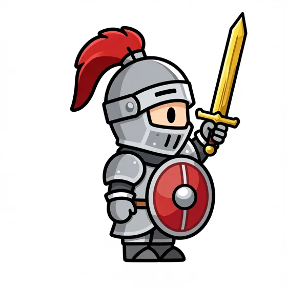
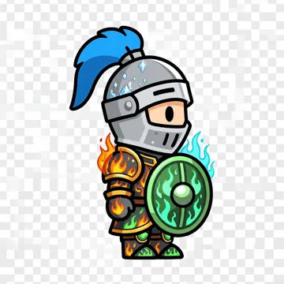
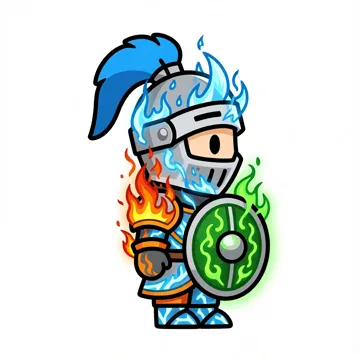
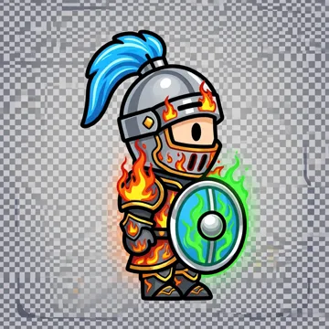
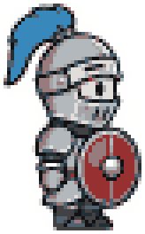

1 · Animated sprite sheet
A character in, a walk cycle out.
Pick an image, describe the motion. It's cut out, animated, keyed to transparency, and imported sliced into Sprites with a looping AnimationClip.
→
walk.png · 8 Spriteswalk.anim · loops~50 credits
2 · Edit what you have
Change it with words.
Edits, variations that stay on-model, background removal, and pixel art with a palette and outline.

"golden sword, red plume"




pixel art · 2 credits
3 · Materials, skyboxes and sound
Ready-to-use Unity assets.
Tileable textures arrive with normal and roughness maps, set up as a Material for Built-in, URP or HDRP. Panoramas become skyboxes; sounds, voices and music become AudioClips.
"mossy cobblestone"
→ cobblestone.mat · ~10 credits